Generates synthetic data from a sophisticated joint modeling framework that seamlessly integrates longitudinal biomarker trajectories with survival outcomes through ordinary differential equations (ODEs). This simulation engine produces realistic clinical trial datasets where complex biomarker dynamics govern event hazards via shared random effects and trajectory features, capturing the intricate interplay between disease progression and time-to-event processes.
Arguments
- n
Integer. Number of subjects to simulate. Larger cohorts provide more stable parameter estimates (default: 100).
- alpha
Numeric vector of length 3. Association parameters quantifying how trajectory features influence survival hazard:
[biomarker, velocity, acceleration]. Positive values indicate increased risk (default: c(0.6, 1.0, -1.5)).- beta
Numeric vector governing ODE dynamics (length 5). Controls biomarker trajectory evolution:
[biomarker, velocity, x1, x2, time](default: c(-1.0, -0.6, -0.8, 0.5, 0.4)).- phi
Numeric vector of length 2. Baseline covariate effects modulating survival hazard independently of biomarker dynamics:
[w1, w2](default: c(0.8, -1.2)).- weibull_shape
Numeric. Weibull shape parameter (\(\kappa\)) characterizing baseline hazard evolution. Values > 1 yield increasing hazard (aging effect), < 1 decreasing hazard (selection effect), = 1 constant hazard (exponential) (default: 1).
- weibull_scale
Numeric. Weibull scale parameter (\(\theta\)) determining the characteristic event time. Larger values shift the hazard curve rightward (default: 8).
- sigma_b
Numeric. Standard deviation of subject-specific random effects capturing unobserved heterogeneity. Larger values increase between-subject variability in both trajectories and hazards (default: 0.1).
- sigma_e
Numeric. Measurement error standard deviation reflecting assay precision and biological fluctuations. Smaller values indicate more reliable biomarker measurements (default: 0.1).
- seed
Integer. Random seed ensuring reproducible simulations. Essential for method validation and comparison studies (default: 42).
- verbose
Logical. Display informative progress messages during simulation workflow (default: FALSE).
Value
A list containing two complementary datasets:
- longitudinal_data
Data frame with longitudinal measurements:
id: Subject identifiertime: Measurement timev: Observed biomarker value incorporating latent trajectory, random effect, and measurement errorx1: First longitudinal covariate (standardized)x2: Second longitudinal covariate (standardized)biomarker: True latent biomarker trajectory valuevelocity: True latent biomarker velocity valueacceleration: True latent biomarker acceleration value
- survival_data
Data frame with survival outcomes:
id: Subject identifiertime: Observed event/censoring timestatus: Event indicator (1 = event, 0 = censored)w1: First survival covariate (standardized)w2: Second survival covariate (standardized)b: Shared random effect
Details
Mathematical Framework
The simulation orchestrates a sophisticated joint model architecture comprising two intricately coupled components:
1. Longitudinal Dynamics
Biomarker evolution is governed by a second-order linear ODE system that captures temporal dynamics: $$\ddot{m}_i(t) = \boldsymbol{\beta}^{\top} \mathbf{Z}_i(t)$$
where:
\(m_i(t)\): Latent biomarker trajectory for subject \(i\)
\(\mathbf{Z}_i(t) = [m_i(t), \dot{m}_i(t), X_1, X_2, t]^{\top}\): State vector (5-dimensional)
\(\boldsymbol{\beta}\): Parameter vector governing homeostatic feedback, damping forces, and external influences
Observed measurements arise from a hierarchical structure incorporating both systematic and stochastic components: $$V_{ij} = m_i(T_{ij}) + b_i + \varepsilon_{ij}$$
where \(b_i \sim N(0, \sigma_b^2)\) captures subject-specific deviations and \(\varepsilon_{ij} \sim N(0, \sigma_e^2)\) represents measurement variability.
2. Survival Process
The instantaneous hazard function elegantly links biomarker dynamics to event risk through a multiplicative model: $$\lambda_i(t|b_i) = \lambda_0(t) \exp[\boldsymbol{\alpha}^{\top} \mathbf{m}_i(t) + \mathbf{W}_i^{\top} \boldsymbol{\phi} + b_i]$$
where:
\(\lambda_0(t) = (\kappa/\theta)(t/\theta)^{\kappa-1}\): Weibull baseline hazard capturing population-level risk evolution
\(\mathbf{m}_i(t) = [m_i(t), \dot{m}_i(t), \ddot{m}_i(t)]^{\top}\): Comprehensive trajectory feature vector
\(\mathbf{W}_i\): Time-invariant baseline characteristics
\(b_i\): Shared random effect inducing correlation between longitudinal and survival processes
Simulation Workflow
The data generation proceeds through a carefully orchestrated pipeline:
ODE Integration: Numerical solution of the coupled ODE system using adaptive Runge-Kutta methods with automatic step size control for optimal accuracy-efficiency tradeoff
Event Time Generation: Sophisticated sampling from the conditional hazard distribution via the
simsurvengine, accounting for complex time-varying covariatesCensoring Mechanism: Realistic administrative censoring uniformly distributed between the 50th and 95th percentiles of event times, mimicking clinical trial follow-up patterns
Visit Scheduling: Adaptive measurement protocols with higher frequency during critical periods (quarterly initially, semi-annual subsequently) and stochastic 10% missingness
Parameter Interpretation Guide
Trajectory Dynamics (
beta):beta[1]: Homeostatic feedback strength (negative values promote stability)beta[2]: Damping coefficient controlling oscillation suppressionbeta[3-4]: Sensitivity to longitudinal covariatesbeta[5]: Time trend capturing systematic changes
Hazard Association (
alpha):alpha[1]: Current biomarker value effect (positive indicates deleterious biomarker)alpha[2]: Velocity effect capturing prognostic value of trajectory directionalpha[3]: Acceleration effect reflecting stability importance (negative suggests protective stability)
Note
Visit schedules intelligently adapt to individual follow-up durations, balancing information gain with practical constraints
Progress reporting can be silenced via
verbose = FALSEfor batch simulations
Examples
# Basic usage with default parameters
sim <- simulate()
str(sim)
#> List of 2
#> $ longitudinal_data:'data.frame': 1010 obs. of 8 variables:
#> ..$ id : int [1:1010] 1 1 1 1 1 2 2 2 2 2 ...
#> ..$ time : num [1:1010] 0 0.25 0.5 0.75 1 0 0.5 0.75 1 1.25 ...
#> ..$ v : num [1:1010] 0.0919 0.1938 0.2904 0.3098 0.2987 ...
#> ..$ x1 : num [1:1010] -0.00462 -0.00462 -0.00462 -0.00462 -0.00462 ...
#> ..$ x2 : num [1:1010] 1.33 1.33 1.33 1.33 1.33 ...
#> ..$ biomarker : num [1:1010] 0 0.0209 0.0822 0.1806 0.3111 ...
#> ..$ velocity : num [1:1010] 0 0.166 0.322 0.462 0.578 ...
#> ..$ acceleration: num [1:1010] 0.671 0.651 0.595 0.514 0.413 ...
#> $ survival_data :'data.frame': 100 obs. of 6 variables:
#> ..$ id : int [1:100] 1 2 3 4 5 6 7 8 9 10 ...
#> ..$ time : num [1:100] 1.039 4.397 2.937 8.928 0.746 ...
#> ..$ status: int [1:100] 1 1 1 1 1 1 1 1 1 1 ...
#> ..$ w1 : num [1:100] 1.201 1.045 -1.003 1.848 -0.667 ...
#> ..$ w2 : num [1:100] -2.001 0.334 1.171 2.06 -1.377 ...
#> ..$ b : num [1:100] 0.1371 -0.0565 0.0363 0.0633 0.0404 ...
# Check data characteristics
cat("Event rate:", mean(sim$survival_data$status), "\n")
#> Event rate: 0.77
cat(
"Observations per subject:",
nrow(sim$longitudinal_data) / nrow(sim$survival_data), "\n"
)
#> Observations per subject: 10.1
# Visualize trajectories with survival information
library(ggplot2)
library(dplyr)
#>
#> Attaching package: ‘dplyr’
#> The following objects are masked from ‘package:stats’:
#>
#> filter, lag
#> The following objects are masked from ‘package:base’:
#>
#> intersect, setdiff, setequal, union
# Select subjects with different outcomes
plot_data <- sim$longitudinal_data %>%
left_join(sim$survival_data[, c("id", "time", "status")],
by = "id", suffix = c("", "_event")
) %>%
filter(id %in% sample(unique(id), 9))
ggplot(plot_data, aes(x = time, y = v)) +
geom_line(aes(color = factor(status)), alpha = 0.7) +
geom_point(aes(color = factor(status)), size = 1) +
geom_vline(aes(xintercept = time_event),
linetype = "dashed", alpha = 0.5
) +
facet_wrap(~id, scales = "free_y", ncol = 3) +
scale_color_manual(
values = c("0" = "blue", "1" = "red"), labels = c("Censored", "Event")
) +
theme_minimal() +
labs(
x = "Time (years)", y = "Biomarker Value", color = "Outcome",
title = "Simulated Longitudinal Trajectories"
)
#> `geom_line()`: Each group consists of only one observation.
#> ℹ Do you need to adjust the group aesthetic?
